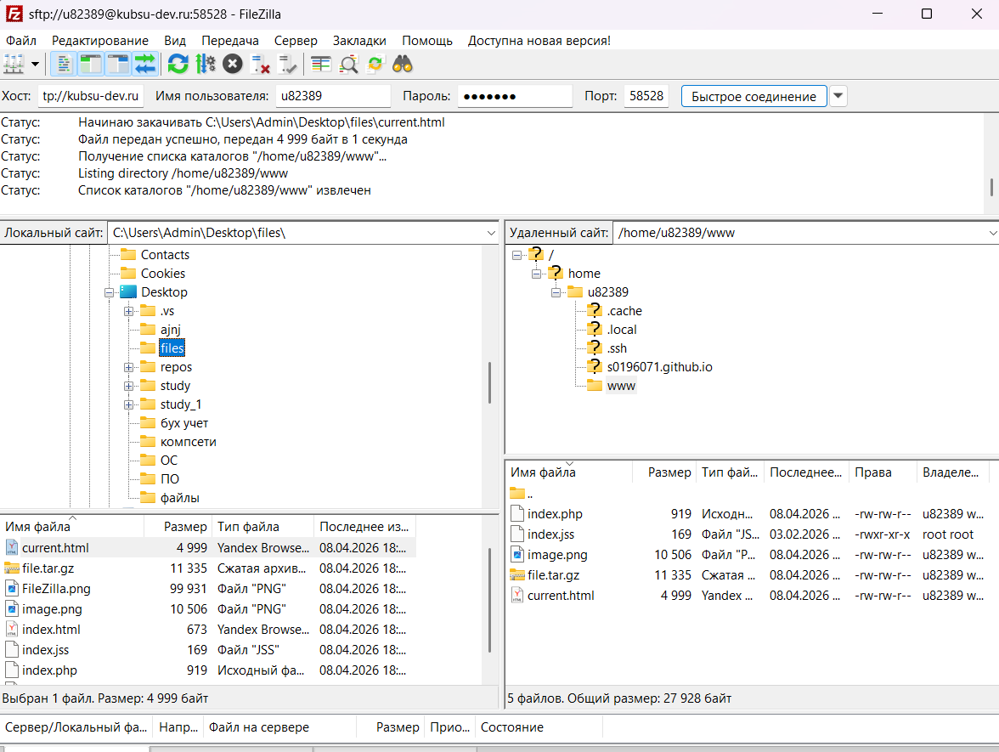
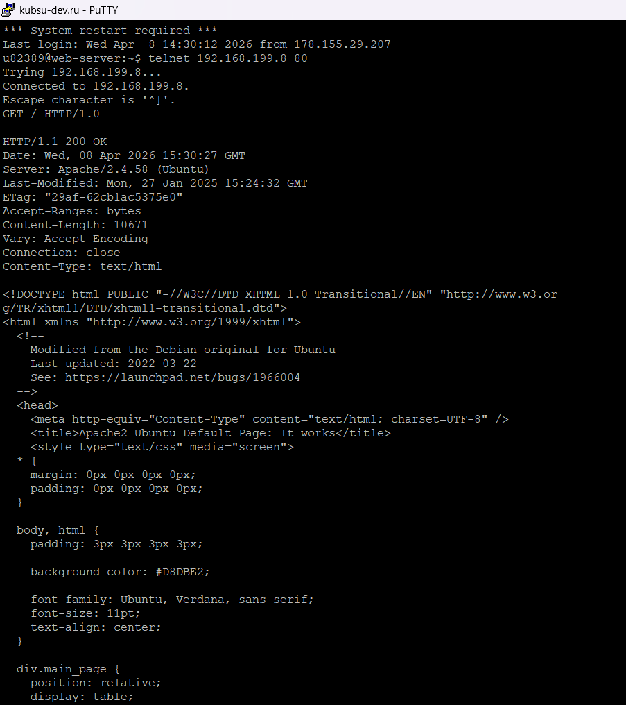
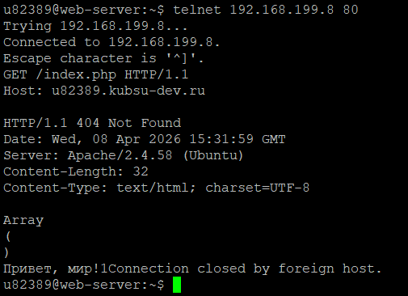
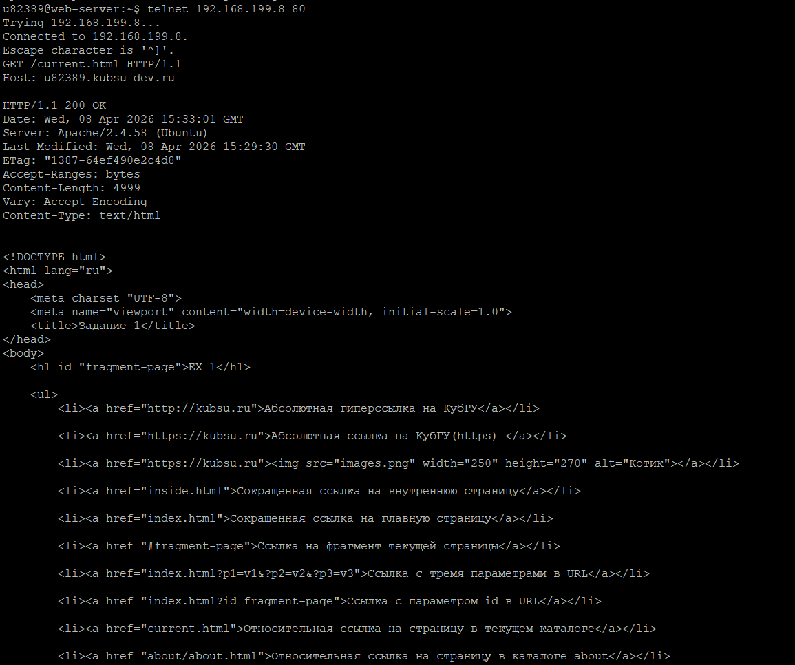
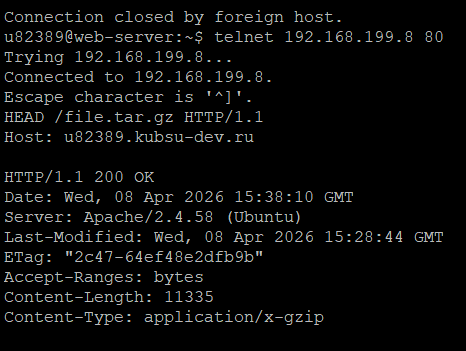
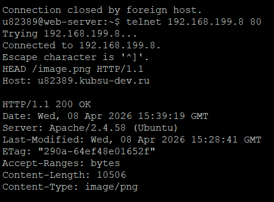
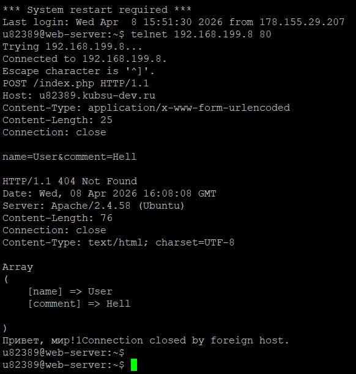
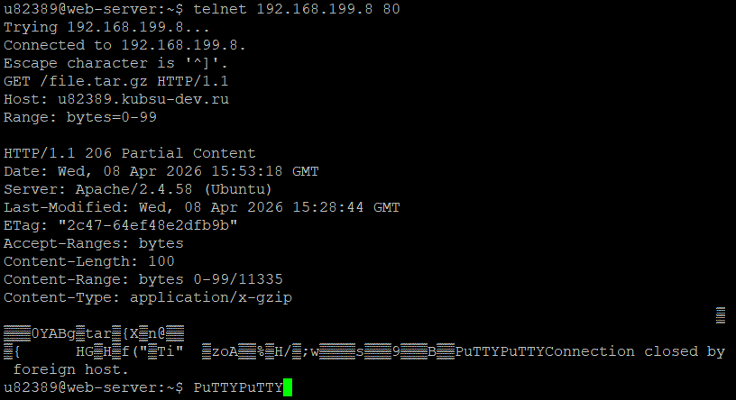
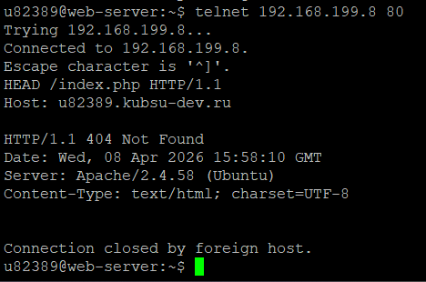
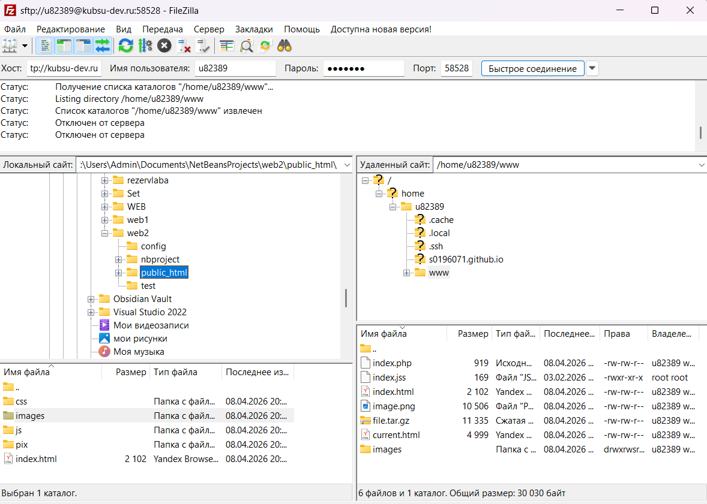

Для начала нужно залить файлы на веб-сервер kubsu-dev.ru.
Я это сделала через FileZilla.

Далее выполним задания с помощью telnet и Putty:
1) получить главную страницу методом GET в протоколе HTTP 1.0

2) получить внутреннюю страницу методом GET в протоколе HTTP 1.1
Для разнообразия вывела две страницы. Здесь - внутренняя страничка index.php

А тут current.html

3) определить размер файла file.tar.gz, не скачивая его

Размер составляет 11335
4) определить медиатип ресурса /image.png

Медиатип: image/png
5) отправить комментарий на сервер по адресу /index.php

6) получить первые 100 байт файла /file.tar.gz

7) определить кодировку ресурса /index.php

Таким образом, кодировка в index.php UTF-8
Загруженная на веб-сервер страница index.html:
